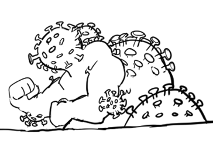
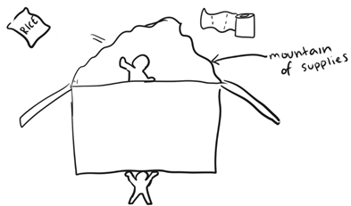
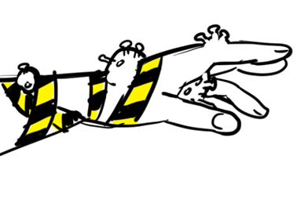
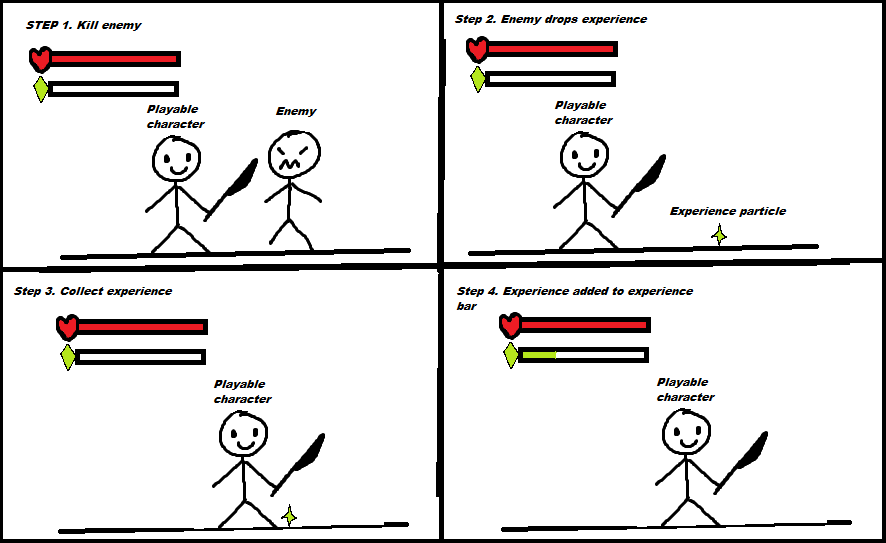
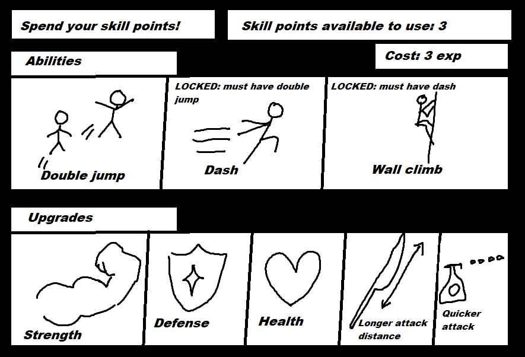
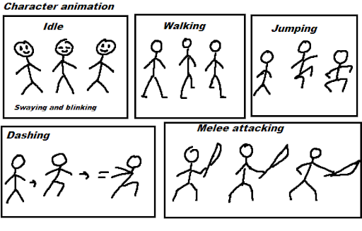
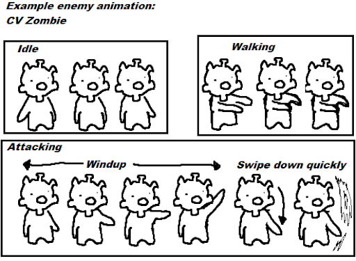
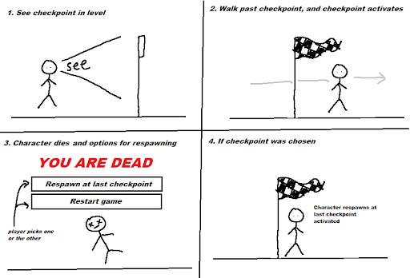

On top of expanding and adding onto current features including more level designs, utilising more of the sprites, having varied attacks and more player attacks; the following new features would be considered for future development on the game.
A feature that would extend off of ‘functioning enemies’ would be the boss enemy feature. A boss enemy will be a unique enemy at the end of the level that is more difficult than other enemies in terms of damage capability, health and attacks. The validation test for this feature is if the boss damages the player when attacking, executes attacks when the player is in the area and if the boss loses health when attacked.
The following graphics and information are the planned bosses for each area of the game.
Boss 1: Coronavirus Beast

EVF figure 1.1. Coronavirus Beast design
Description: Boss is amalgamation of coronavirus particles with two bulky arms. It has an elongated spitter on the front of itself.
| Specifics | Attacks and attack patterns |
|---|---|
|
HP: 10 hits
Damage: Varied Attack Speed: Varied How to subdue: Scalpel Area: Hospital (tutorial) Positioning: The boss will remain in a static position. The only movement it can do is turn (left and right facing) in response to the player moving sides |
Touch: touching the boss will damage the player.
Damage: half heart Attack Speed: N/A Arm bang: The boss will bang its arms on the ground once if the player is directly in front. Damage: 1 heart Attack Speed: Slow (2) CV Rain: The arm bang will cause the room to drop small CV particles from the ceiling. Damage: half heart Attack Speed: Average (3) Spitter: If the player is far away, the boss will spit small CV particles at the player. Damage: half heart Attack Speed: Quick (4) |
Boss 2: The hoarders

EVF figure 1.2. The Hoarders design
Description: Boss is a pair of hoarders. One holding a giant cardboard box (with supplies in it), and the other inside the box throwing things (supplies/groceries) that hurt or put an effect on the player.
| Specifics | Attacks and attack patterns |
|---|---|
|
HP: 15 hits
Damage: varied (Overall) attack Speed: Quick (4) How to subdue: Scalpel Area: Supermarket Positioning: The boss will walk back and forth (left and right) by default and not in reaction to the player, meaning the player will have to platform (on shelves) to dodge the boss’ ‘touch’ damage. |
Touch: touching the boss will damage the player. Damage: half heart Attack Speed: N/A Series of thrown object attacks: What is being thrown will be determined with RNG or in a pattern. Toilet paper: The hoarder will throw toilet paper at the player and it will wrap (stun) the player. Damage: none Attack effect: Stun Duration: 2.5 seconds or the player can mash a button 5 times to unstun Attack speed: Quick (4) Hand sanitizer: The hoarder will squirt hand sanitizer which both hurts and slows the player. Damage: half heart Attack effect: Slowness Duration: 2 seconds Attack speed: Quick (4) Can of food: A small object being thrown toward the player that does regular damage. Damage: 1 heart Attack Speed: average (3) Bag of rice: A large object being thrown toward the player that does regular damage. Damage: 2 hearts Attack speed: Slow (2) |
Boss 3: Social disthand

EVF figure 1.3. Social Disthand design
Description: Boss is amalgamation of coronavirus particles with two bulky arms. It has an elongated spitter on the front of itself.
| Specifics | Attacks and attack patterns |
|---|---|
|
HP: 15 hits
Damage: varied Attack Speed: Average (3) How to subdue: Hand sanitizer Area: Apartment Positioning: The hand will be positioned to only one side of the screen, and will be sticking out from that particular side. It can only move up and down. |
Gaseous cloud: The boss will have a constant gaseous ‘poisonous’ particle cloud around it that damages the player if the player goes inside it. Damage: 1 heart Attack Speed: N/A Touch: contact with the boss will damage the player. Damage: 2 hearts Attack Speed: N/A Dash attack: The boss will track the player from a distance and then launch forward Attack Speed: Very quick (5) Tracking: The hand will follow the player in order to touch the player. Attack Speed: Slow (2) |
Earning experience
Experience will be the reward for defeating enemies, and the amount of experience earned from an enemy depends on the difficulty of the enemy. When an enemy is defeated, the game will give the player experience and it will be recorded and saved to display on their HUD/status bar. This feature will give the player incentive to play (besides for fun) and keep playing the game as accumulating experience can be seen as a measure of achievement. To validate this feature, the player should receive experience after defeating an enemy. The experience will be dropped on the ground of the level for the player to pick up (for interactivity.)

EVF figure 2.1 Earning experience mockup
Leveling up (with experience) and skill points
The game will feature ‘skills’ to enhance the gameplay experience, which can be unlocked by the accumulated experience collected by the player. After reaching an experience milestone (filling an experience bar), the player will receive a ‘skill point’. Experience required for a skill point will be exponential to balance out the game, in which the player will gain a level per experience bar filled. The level will be on a number scale starting from 0 and the limit will depend on the amount of skills there are in the game.
The skill point can be used to upgrade the character and give it abilities. Additional movements and upgrades can be unlocked using these skill points. Previously mentioned character movements dashing, double jumping and crouching will be unlockable through the skill points to make gameplay easier. These abilities will be used to access areas of the game that may require the user to have these abilities. For example, a ledge that may be too high (that requires double jump) or an area that requires the character to crouch to get through. Upgrade abilities can provide the character with more strength, longer attack distance, more defense, more health and quicker attack.
To validate this feature, when the character levels up (therefore gaining a skill point), a menu should appear asking them to spend their skill point on an upgrade. Some upgrades will be locked behind other upgrades so the player can’t immediately choose the best upgrade (upgrades have a prerequisite of other upgrades).

EVF figure 2.2 Level up menu mockup
This is the menu for upgrading your character. The user will have to hover over each ability or upgrade and the cost will show up in the top right.
Animation will be an extended feature not only for better graphics, but for the team to better telegraph enemy attacks and add more advanced combat. To telegraph an enemy attack is to give the player an indication that an attack will be happening, in order for the player to dodge or protect themselves from it. This is to balance the game and make it feel ‘fair’ rather than having random attacks from enemies. For example, an enemy may ‘wind up’ their weapon and then swing (attack). The time between the wind up and the attack enables the player to anticipate their next potential move to take. To validate that the character animation feature has been properly implemented into the game, the game should show animated sprites when the player presses on any keys or controls (except for idle animations), and the corresponding animation will occur with it. If the animations are on the enemies, the enemies should always be animated.

EVF figure 3.1 Examples of player animation frames

EVF figure 3.1 Examples of enemy animation frames
Checkpoints will be incorporated for the ease of the user, this may allow for more complex or longer level designs. This will be an improvement to the death system, which instead of restarting the level when death occurs, it restarts the player at the last checkpoint the player triggered. The game will maintain the progress of the player at a certain point in the level, which is indicated by a ‘checkpoint marker’. The player will have to make it to the checkpoint marker first before being able to respawn there after death. The player will only be assigned to one checkpoint at a time.
Validation test: The game should save the player’s current state when the player touches the checkpoint marker, and when the character dies, the character should respawn at the last triggered checkpoint.

EVF figure 3.1 Checkpoint system mockup